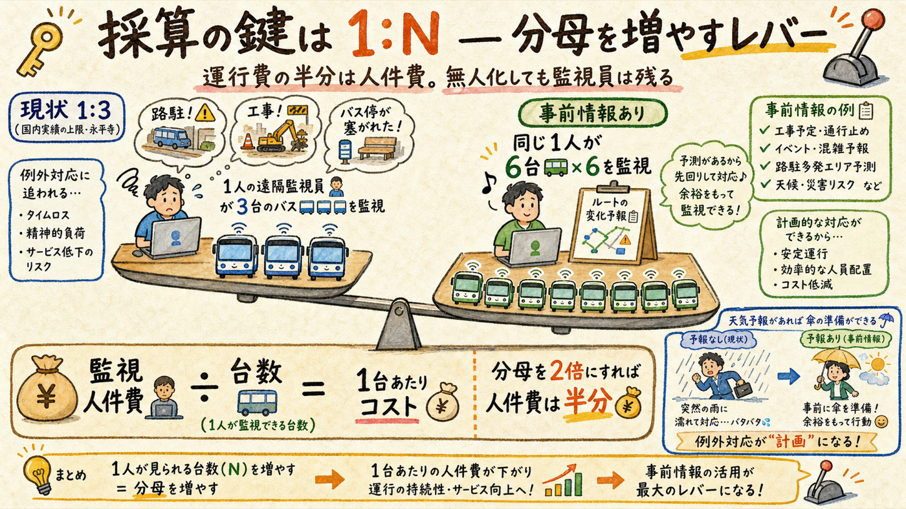
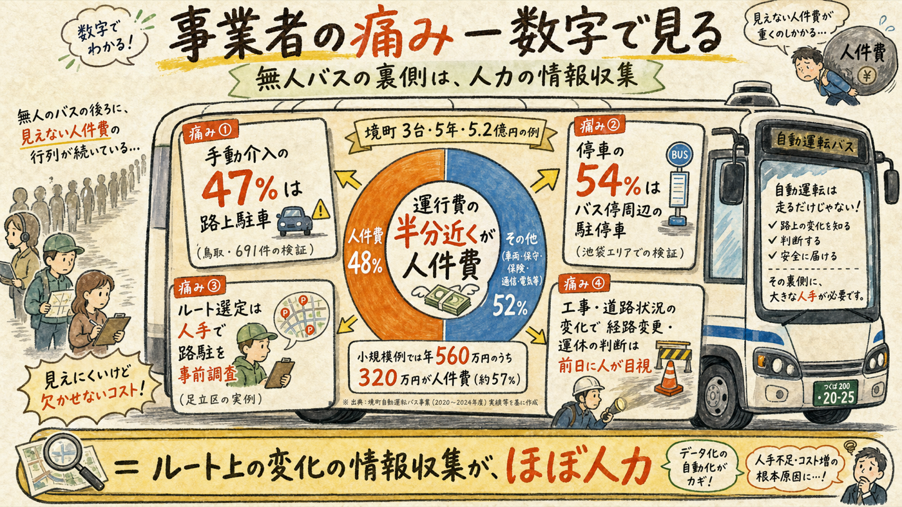
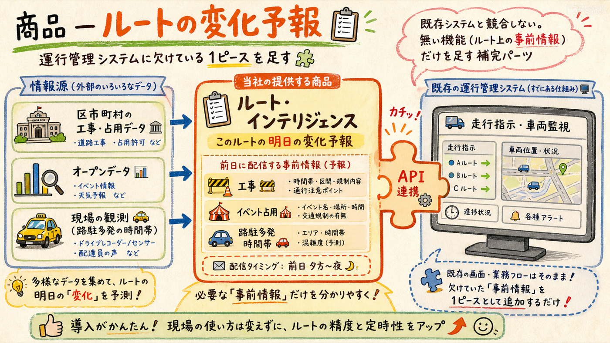
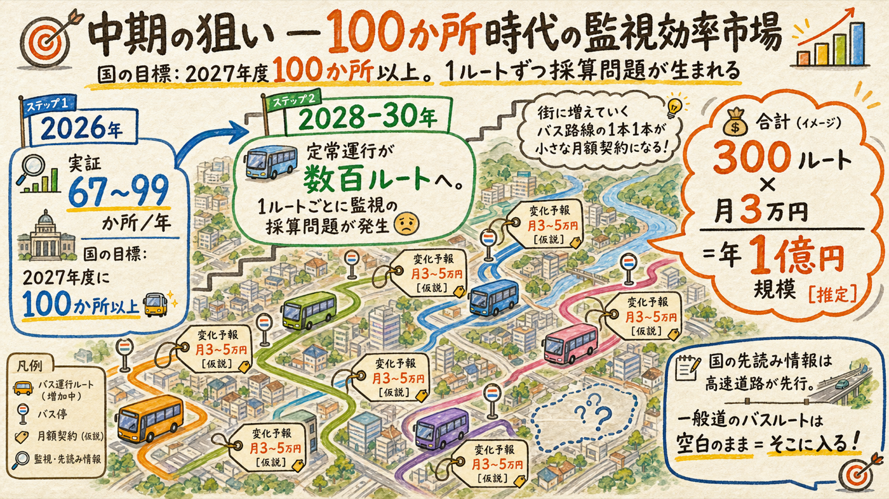

自動運転バス事業者に刺さる話を作るため、彼らの金の痛点を一次情報で掘った。答えははっきりしていた: 運行費の半分近くが人件費で、無人化しても遠隔監視員が残り、国内実績の上限は1人3台。ルート上の変化（工事・路駐・占用）の事前情報は、監視を「例外対応」から「計画運行」に変え、この1:Nの分母を上げる——事業者の損益計算書に直接触る唯一の語り方がこれだ。
「工事マップいかがですか」ではなく「監視の分母を増やしませんか」

2023年施行の改正道交法で、レベル4（特定自動運行）には遠隔監視装置と特定自動運行主任者の配置が義務づけられた。つまり「無人」バスにも監視の人件費は必ず残る。1人が何台まで見られるかの明文上限は無く許可審査ごとの判断で、国内実績の上限は永平寺の1人3台。警察庁の委託調査も「1人複数台監視では常時モニタリング・臨機応変対応が監視台数に大きく影響する」と、例外対応の多さこそが1:Nの天井だと指摘している。
ロジックの核心: 例外対応の中身は何か——手動介入の47%が路上駐車（鳥取・691件）、停車の54%がバス停周辺の駐停車（池袋）、そして工事・道路状況の変化。これらは全部「ルート上の変化」であり、大半は前日に知り得る。知っていれば監視員は臨機応変ではなく計画で処理できる＝1人あたり台数を上げられる＝人件費が割り算で下がる。
全部一次情報。事業者の前で言い切れる

| 数字 | 出典 | 話法での使い方 |
|---|---|---|
| 運行費の半分近くが人件費（境町3台5年5.2億円） | BOLDLY社長発言（日経） | 「御社の損益の最大項目の話です」 |
| レベル4でも遠隔監視員は残る。実績上限 1人3台 | 改正道交法・永平寺（RoAD to the L4） | 「無人化してもここは消えない費用ですよね」 |
| 手動介入の47%が路上駐車／停車の54%がバス停周辺の駐停車 | 鳥取市検証・国交省池袋実証 | 「介入の半分はセンサーの問題ではなく、路上の変化の問題です」 |
| ルート選定時の路駐調査は人手・目視（足立区）。運休・経路変更の判断も人が前日に道路状況を見て決めている | 足立区公式・Dispatcher運用 | 「その目視、うちが予報として毎朝届けます」 |
| 国は「先読み情報」をインフラ連携の中核に明記 — ただし新東名など高速道路が先行 | 国交省・経産省（2025年実証） | 「国も同じ結論です。ただ一般道の御社のルートは誰もやっていない」 |
既存システムと戦わない。差し込む

BOLDLYの運行管理システムDispatcher（約30車種接続・GeoJSON/API連携あり）の機能は走行指示・車両状態監視・乗客検知・走行可否判断——ルート上の道路環境変化を事前に取り込む機能は公式ページに存在しない。ここが差し込み口。商品は「ルートの変化予報」: そのルートと停留所周りに限定して、①道路工事・占用（区市町村データ＋現地確認） ②イベント・お祭りの通行止め ③路駐多発の場所と時間帯 [現場観測] を、前日夕方と当日朝に運行管理へAPI/帳票で届ける。
大田区・BOLDLY・運行受託者、誰に会っても背骨は同じ
| 想定問答 | 返し |
|---|---|
| 「Dispatcherと何が違うの？」 | 「競合じゃなく補完です。Dispatcherは車両を見る仕組みで、路上の明日の変化を入れる口が無い。そこにGeoJSONで差し込むだけです」 |
| 「データはどこから？」 | 「区市町村の工事・占用データとオープンデータが土台。ルート限定なので、足りない分は現地確認で埋めます。全東京は無理でも、御社の4kmなら確実にできます」 |
| 「いくら？」 | 「実証中は無料で答え合わせをさせてください。本採用の目安は1ルート月3〜5万円——遠隔オペレーター人件費の数%です」 |
国の目標が分母を作ってくれる

| 時期 | 市場の状態 | あなたの動き |
|---|---|---|
| 2026-27 | 実証67〜99か所/年。国の目標「2027年度に100か所以上」。事前情報の収集はまだ人力 | 大田区ヒアリング（8月・質問に1:N/介入/事前情報の価値を追加済み）。売らない。実態を知る |
| 2028-30（分岐点） | 定常運行が数百ルートへ。1ルートごとに監視採算の問題が顕在化。1ルート月3〜5万 [仮説] × 300ルート ＝ 年1億円規模 [推定] | 分岐シグナル点灯（ルート数の急増・Waymo東京面的展開・国の一般道枠組み）でルート監視SaaS参入。無料の答え合わせ実績を持って最前列から |
| 2030s | 国の一般道「先読み情報」枠組みが動けば、供給側の標準ポジション（Sogelink型）が開く | 北極星のポジションへ |
変わらないもの: これは2028-30の分岐待ちの深掘りであり、今の主戦（おさんぽスコア・地図化パック）とG-Pゲートは不変。今すぐやるのは大田区の15分ヒアリングと、この話法を頭に入れておくことだけ。新しい実装はしない。